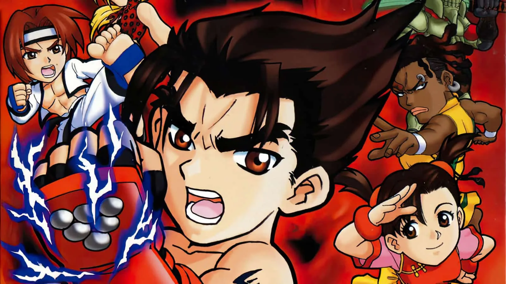

Date: 1999-08-05
Title: Tekken Card Challenge
Summary: A unique spin-off that replaces fighting gameplay with a strategic card battle system.
Categories: Spin-Off, Strategy
Type: Game Files
File Size: ~16 MB
Format: ROM
Region: Japan / USA / Europe
Platform: WonderSwan
Tekken Card Challenge is a spin-off of the Tekken series released on the WonderSwan handheld system. Instead of traditional fighting mechanics, the game uses a card-based battle system where players select attack, defense, and special move cards to defeat opponents. Each character from the Tekken universe has unique cards and strategies, making gameplay more tactical and slower-paced compared to mainline entries. Despite being very different from other Tekken games, it gained a cult following for its originality and strategic depth.
Note: Support Original Game By buying it . --Tekken Card Challenge Can be Played By either a real WonderSwan or By WonderSwan Emulatores via Pc,Download link also include exclusive demo version of the game that can be played. Download